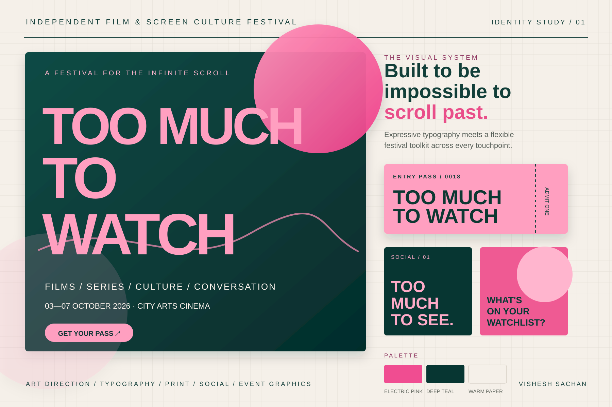
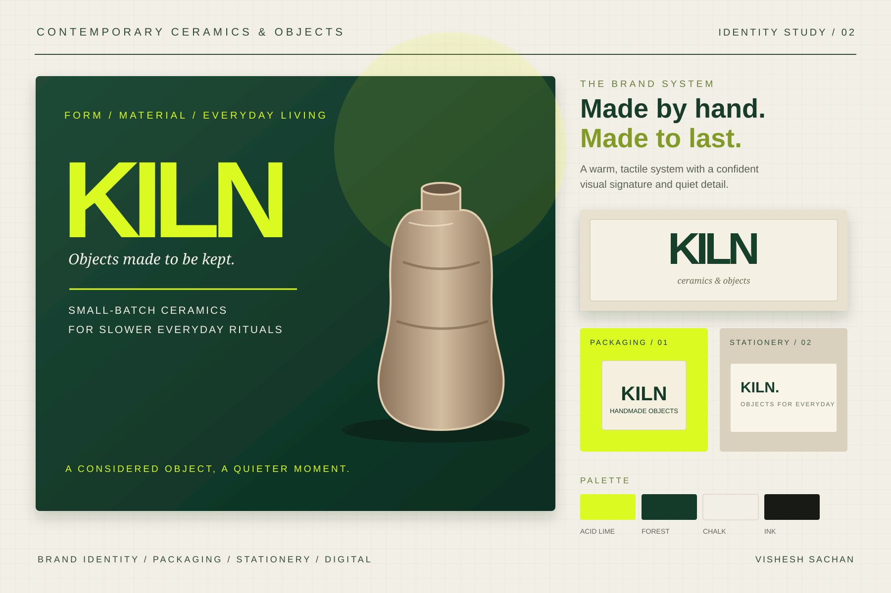
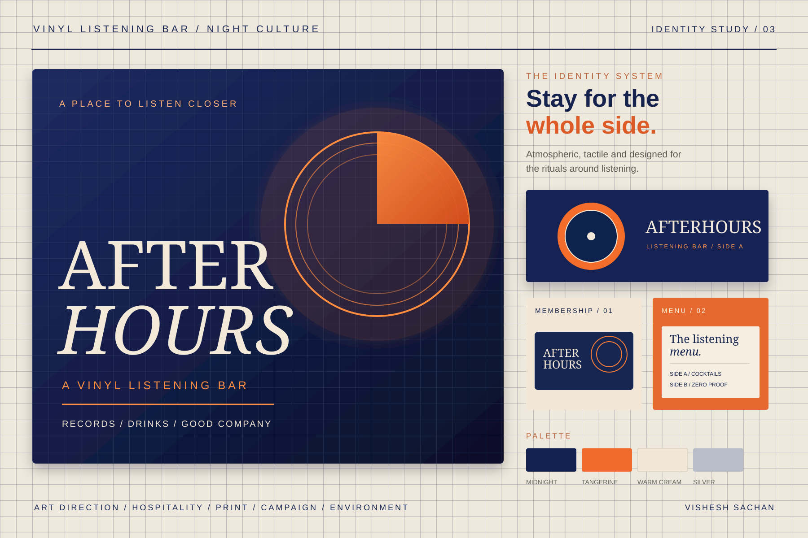

6–9
MONTHS
MONTHS
Graphic Designer | File My Firm
- Designed social media creatives, posters and marketing materials.
- Maintained visual consistency across brand communication.
- Translated briefs into engaging visual concepts.
Shri Ramswaroop Memorial College of Engineering and Management (SRCOEM)
CGPA: 7.7
City Montessori School (CMS), Lucknow
City Montessori School (CMS), Lucknow

VIEW CASE STUDY ↗A visual identity for a contemporary film and screen-culture festival, built around expressive display type and a punchy pink/teal palette.
EXPLORE FULL CASE STUDY ↗
VIEW CASE STUDY ↗A tactile identity for a modern ceramics studio, extending from a distinctive wordmark and maker's mark to packaging and digital touchpoints.
EXPLORE FULL CASE STUDY ↗
VIEW CASE STUDY ↗A night-time identity for a vinyl listening bar, designed across record sleeves, menus, membership, event promotion and environmental signage.
EXPLORE FULL CASE STUDY ↗Independent concept explorations created to demonstrate visual direction, systems thinking and cross-channel design craft.